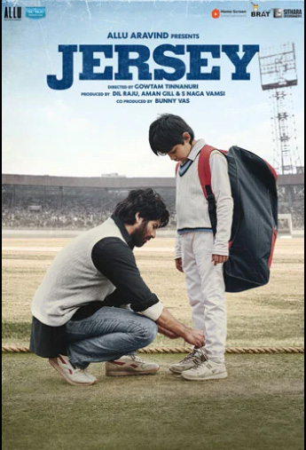
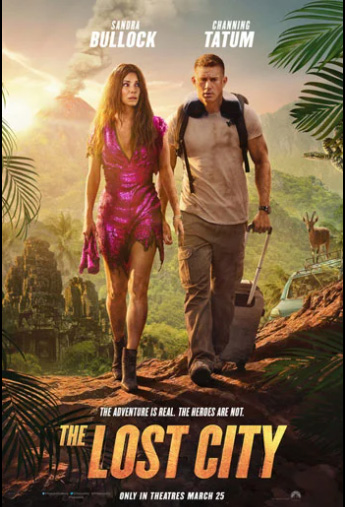

Title: Jersey
Cast: Shahid Kapoor, Mrunal Thakur, Pankaj Kapoor
Director: Gowtam Tinnanuri
Genre: Drama/ Sport
Synopsis: An ex-cricketer struggling to make ends meet, wants to fulfill his child's wish of getting a Jersey but in the process comes face to face with his heroic past and is forced to decide if he will rise to the occasion and become a symbol of hope or continue to live a life as a loser? A heartwarming story starring Shahid Kapoor, Mrunal Thakur and Pankaj Kapoor that will make you embrace your dreams, hopes and family.
Title: The Lost City
Cast: Sandra Bullock, Channing Tatum, Daniel Radcliffe, Brad Pitt
Director: Adam Nee, Aaron Nee
Genre: Action/ Adventure/ Comedy
Synopsis: Brilliant, but reclusive author Loretta Sage (Sandra Bullock) has spent her career writing about exotic places in her popular romance-adventure novels featuring handsome cover model Alan (Channing Tatum), who has dedicated his life to embodying the hero character, “Dash.” While on tour promoting her new book with Alan, Loretta is kidnapped by an eccentric billionaire (Daniel Radcliffe) who hopes that she can lead him to the ancient lost city’s treasure from her latest story. Wanting to prove that he can be a hero in real life and not just on the pages of her books, Alan sets off to rescue her. Thrust into an epic jungle adventure, the unlikely pair will need to work together to survive the elements and find the ancient treasure before it’s lost forever.
copyrights © Movies